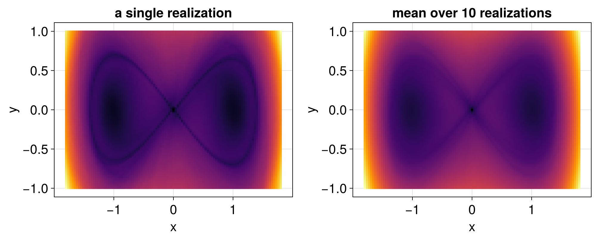

Stochastic Duffing equation
The Duffing equation with a multiplicative noise in the velocity, proportional to the cube root of the position,
\[\begin{cases} \mathrm{d}x = y \,\mathrm{d}t, \\ \mathrm{d}y = (x - x^3) \,\mathrm{d}t + \sigma x^{1/3} \,\mathrm{d}W_t, \end{cases}\]
where $W_t$ is a Wiener process, is a stochastic perturbation of the Duffing equation of the page on choosing the descriptor and the time window. Unlike the additive noise of the tutorial on SDEs, this noise vanishes on the line $x = 0$, so the origin stays an equilibrium, a saddle point, for every realization of the noise, while the other structures are perturbed. We set it up as an SDEProblem, with diagonal noise, which is zero in the first component, with the real cube root cbrt, also for negative values:
using LagrangianDescriptors, StochasticDiffEq, CairoMakie
using LinearAlgebra: norm
drift(u, p, t) = [u[2], u[1] - u[1]^3]
diffusion(u, σ, t) = [0.0, σ * cbrt(u[1])]
M(du, u, p, t) = norm(du) # with `du` the drift
uu0 = [[x, y] for y in range(-1, 1, length = 101), x in range(-1.8, 1.8, length = 101)]Following Balibrea-Iniesta et al. (2016), the Lagrangian descriptors of a single realization of the noise are computed with the same noise path for all initial conditions, with the keyword shared_noise = true of solve. By default, each initial condition has independent noise. The seed of the SDEProblem makes the computation reproducible:
prob = SDEProblem(drift, diffusion, [0.0, 0.0], (0.0, 5.0), 0.2; seed = 123)
lagprob = LagrangianDescriptorProblem(prob, M, uu0)
lagsol_path = solve(lagprob, EM(), dt = 0.01; shared_noise = true)The pictures of different realizations differ, and the mean over realizations shows the structures they share. With the keyword realizations, the problem is solved for several realizations, each with its own noise path, shared by all initial conditions, and the solution gives the mean of the descriptors:
lagsol_mean = solve(lagprob, EM(), dt = 0.01; shared_noise = true, realizations = 10)
fig = Figure(size = (1000, 400))
ax = Axis(fig[1, 1]; title = "a single realization", xlabel = "x", ylabel = "y")
heatmap!(ax, lagsol_path)
ax = Axis(fig[1, 2]; title = "mean over 10 realizations", xlabel = "x", ylabel = "y")
heatmap!(ax, lagsol_mean)
fig
For a single realization, the saddle point stays at the origin, where the noise vanishes, while the homoclinic loops are deformed by the noise, and they change from one realization to another. Their mean shows the structures shared by the realizations.
Without shared_noise = true, each initial condition has independent noise, also in each realization. The mean over realizations approximates the same mean at each initial condition, but, with few realizations, the picture is grainier, since the noise changes from one initial condition to the next.
The descriptor of Balibrea-Iniesta et al. (2016), given by the increments of the solutions, is available as IncrementDescriptor.